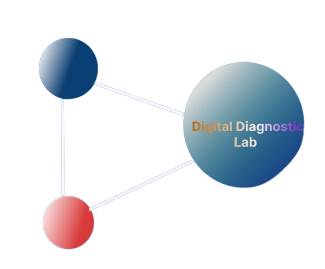

Need help? 💬

Digital Diagnostics Lab
Home
About us
Competencies
Hematology
Complete Blood Count
Blood Smear Analysis
Coagulation Studies
Hemoglobin Electrophoresis
Reticulocyte Count
Molecular Diagnosis
PCR Testing
Genetic Marker Analysis
Viral Load Testing
Pharmacogenomics
Microarray Analysis
Microbiology
Bacterial Culture & ID
Antibiotic Sensitivity
Fungal Culture
Urine Culture
Stool Culture
Chemical Pathology
Liver Function Tests
Kidney Function Tests
Lipid Profile
Cardiac Markers
Electrolytes
Hormone Assays
Parasitology
Malaria Detection
Intestinal Parasites
Filariasis Testing
Schistosomiasis
Trypanosomiasis
Shop Tests
Resources
career
Contact Us
Contact Us
Name *
Message *
Send
Our Bio-Medical Tests
Comprehensive, accurate, and affordable diagnostic solutions for your health needs
All Tests
Test Bundles
Hematology
Immunology / Serology
Endocrinology
Microbiology / Infectious Disease
Gastrointestinal
Cancer Markers
Urine Tests (Non-Microbiology)
Miscellaneous / Other
Cardiac Bio-Markers
Overview
Test Details
Results Interpretation
Action Plan
Description
Who It's For
Duration
Related Symptoms
Test Features
Understanding Your Results
Positive Result
Negative Result
Next Steps
Next Steps
Prevention Tips